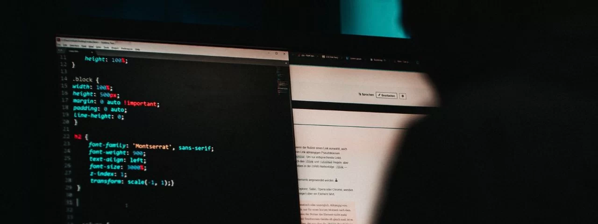

Xbox Game Pass receberá Diablo IV e outros jogos de peso! veja a lista
O catálogo do Xbox Game Pass simplesmente não para de crescer, trazendo uma enxurrada de novos jogos todos os meses para os assinantes. A Microsoft revelou, nesta terça-feira (19), os títulos que chegarão ao serviço de assinatura na reta final de março — e olha que a lista está recheada desta vez, hein?
Ler mais
Igual o Instagram! WhatsApp pode ter em breve Status de até 60 segundos
O WhatsApp está testando a utilização de Status com até 1 minuto de duração, relatou o site WABetaInfo. A novidade foi encontrada na versão Beta do mensageiro para Android, mas deve ser liberada para mais plataformas em breve.
Ler mais

Cuidado! Apps falsos do Imposto de Renda 2024 podem roubar seus dados pessoais
Poucos dias após liberar a declaração do Imposto de Renda 2024, o governo brasileiro já identificou tentativas de golpe envolvendo o tema. Quem denunciou os riscos ao cidadão foi o Centro de Prevenção, Tratamento e Resposta a Incidentes Cibernéticos de Governo (CTIR Gov).
Ler mais